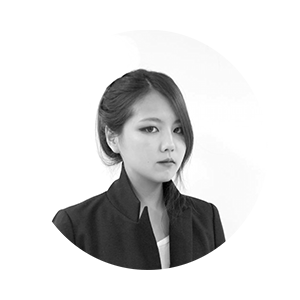

이지윤
OZO
2013 홍익대학교 시각디자인과 졸업
2011 CalArts 해외 연수 이수
2012 뮤직비디오 프로덕션 ‘OFFBEAT’ 조연출 근무
2013 tvN 드라마 ‘이웃집 꽃미남’ 미술팀 근무
2013-2015 미스틱 엔터테인먼트 비디오팀 조감독/감독 근무
2015~ ‘OZOFILM' 대표 및 감독
ozofilm.com
ozofilm@gmail.com
010.7523.0089